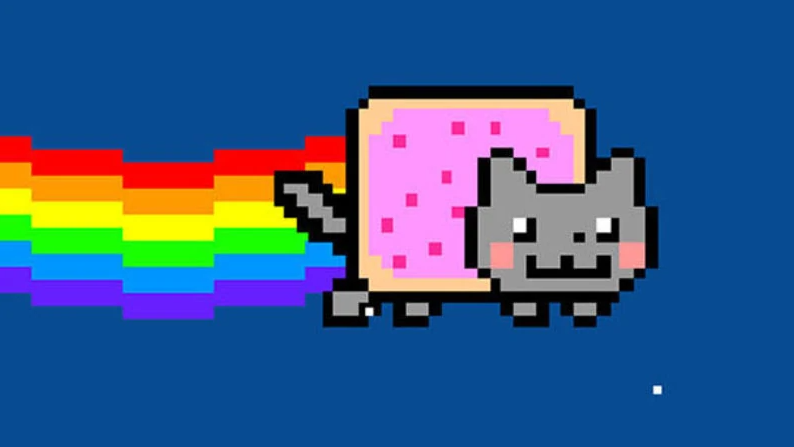

Nyan Cat es un gato con una tostada con mermelada pegada a la espalda.  Como las tostadas siempre caen por el lado de la mermelada y los gatos siempre caen de pie, se anulan entre sí y Nyan cat, al no poder caer de ninguna forma, queda volando en el aire indefinidamente.
El 2 de abril de 2011, el GIF animado del gato fue publicado por Christopher Torres, un joven de 25 años de edad, de Dallas, Texas, quien usa el nombre de "prguitarman", en su página web LOL-Comics con la intención de que inspire ternura. Torres en una entrevista explicó de dónde provino la idea de la animación diciendo: "Yo estaba dirigiendo una campaña de donación de la Cruz Roja y de entre los dibujos en mi vídeo chat gatuno de Livestream, dos personas distintas mencionaron que debo elaborar una “tarta-pop” y un “gato”. En respuesta, creé una imagen híbrida de una tarta-pop y un gato, que en pocos días fue desarrollado en un GIF animado.
La versión original de la canción "Nyanyanyanyanyanyanya!" fue subida por el usuario "daniwell" para el sitio de videos japonés Nico Nico Douga el 25 de julio de 2010. La canción fue hecha en Vocaloid con la voz de Hatsune Miku (初音ミク?). La palabra japonesa para el sonido que hacen los gatos es "nyā" (にゃ?), que es el equivalente de la palabra en idioma inglés "meow" y en español "miau".